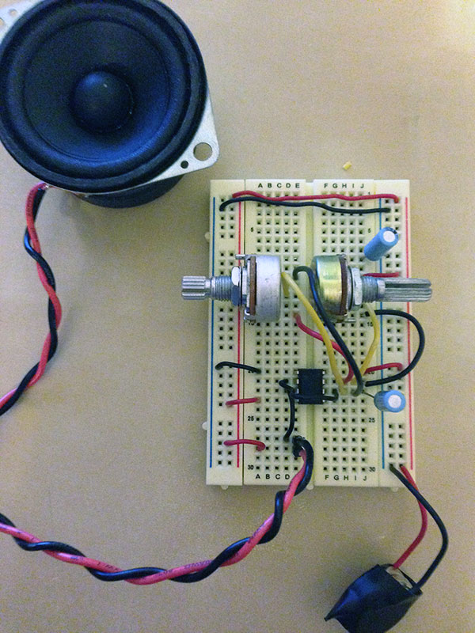
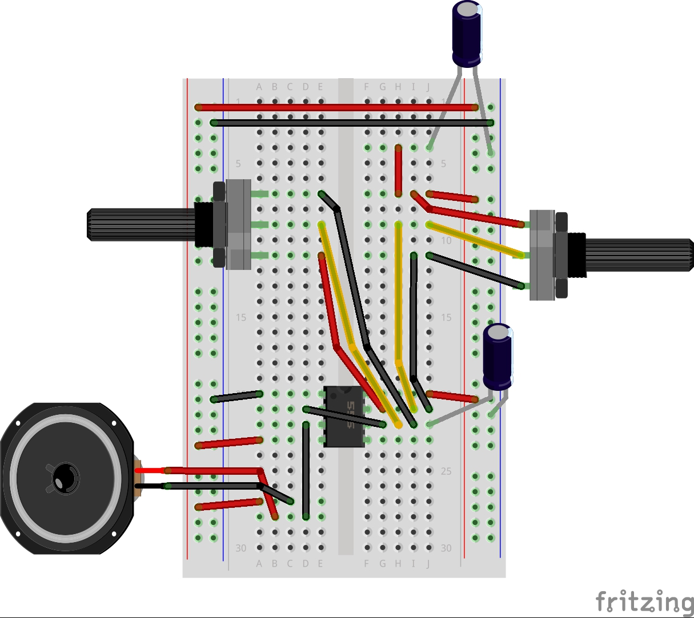
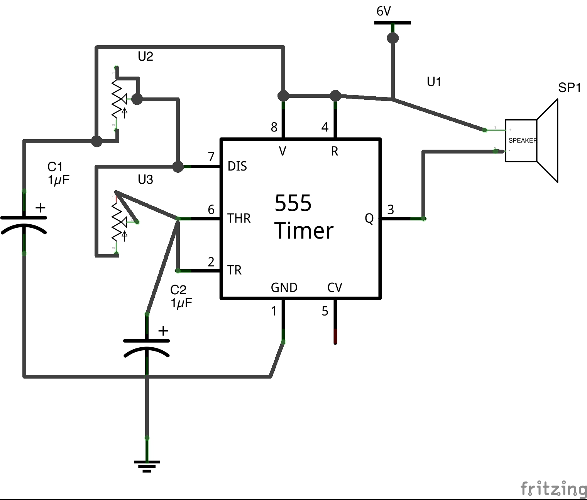
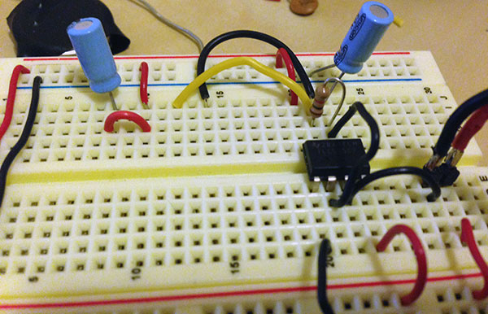
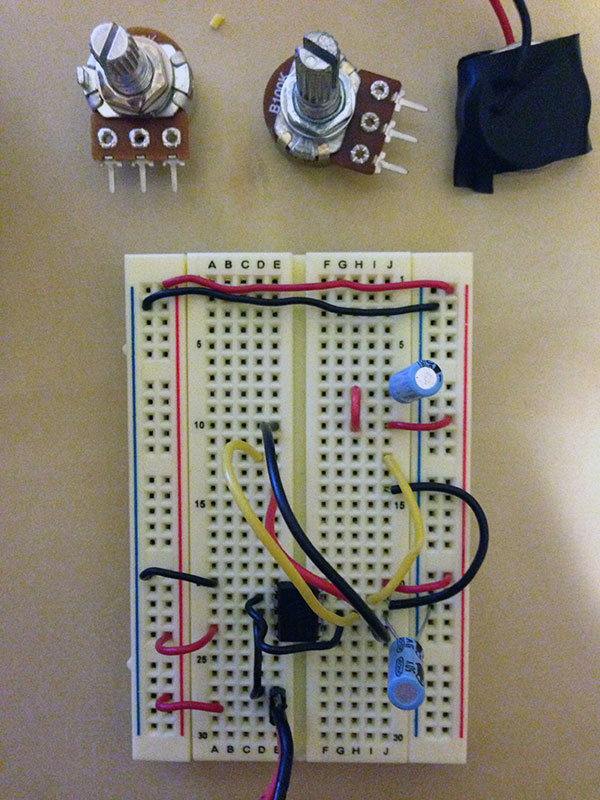

555 Timer analog synth workshop

This workshop is intended to introduce analog electronics as a way of creating sound for small projects and a jumping off point for more complex analog based projects. Arduino and other microcontrollers are great for testing things and making complex circuits, but can be a little bit pricey and a little more than necessary for simple projects like little toys or puppets. This workshop will introduce the idea of using small cheap components to make an audio circuit, which could also be applied to motors lights or other electronic and interactive components.
We will be using the 555 timer chip, which creates oscillations by measuring time using capacitors and using variable resistance to change the rate of the oscillation and pitch of the tone. The following video demonstrates the principle behind a 555 timer.
555 timers are used for all sorts of applications, like windshield wipers, blinking lights and analog sequencers. I got our 555s from Radioshack for $2 each, but you can get them even cheaper by ordering online.
Click here for a full explanation of the 555 integrated chip.
This is the circuit we're going to use for our project today:

I chose it because it is very simple and allows for easy modification of the sound. I made a couple of modifications to use more easily available parts.
Components needed
- (1) 555 timer chip
- (1) 100k potentiometer
- (1) 10k potentiometer
- (2) 1uF capacitor
- (1) 8ohm speaker
- (2) 3v batteries
- Red, black and yellow wire
Steps
- Go over tools: Multimeter, triangle cutter, wire stripper, pliers.
- Set up bread board.
- Setup 555 schematic.

- Power with batteries.
- Substitute resistors with different components. How resistors work.
The result is something like this:
Final schematic and circuit layout:
 Some close ups of the circuit:
 Resources